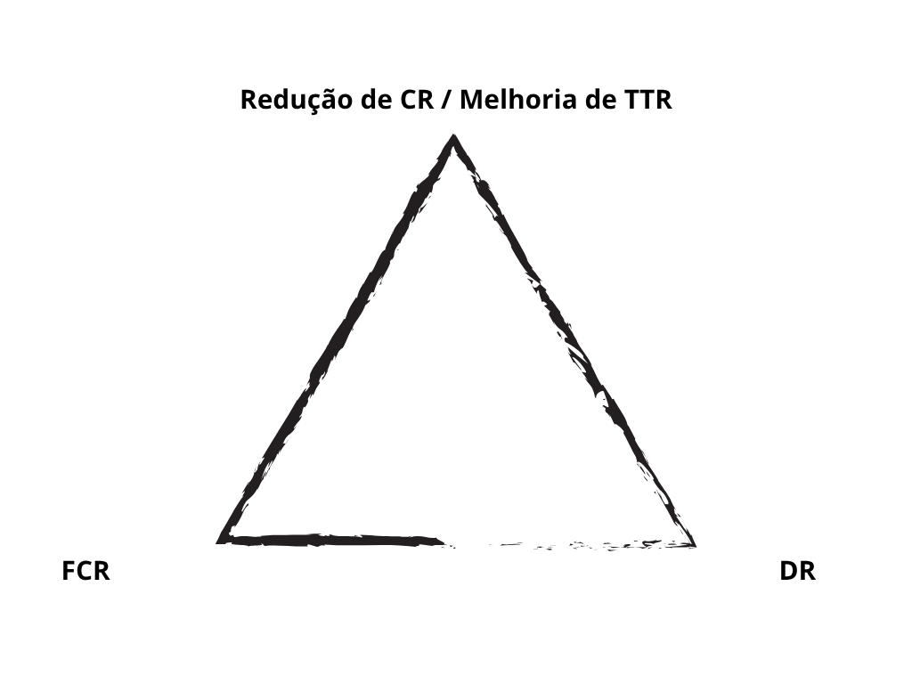
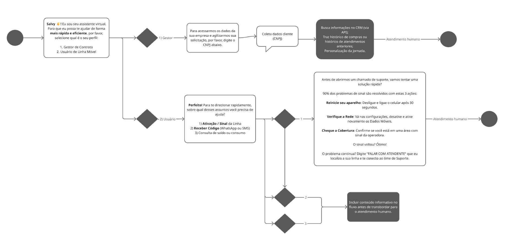
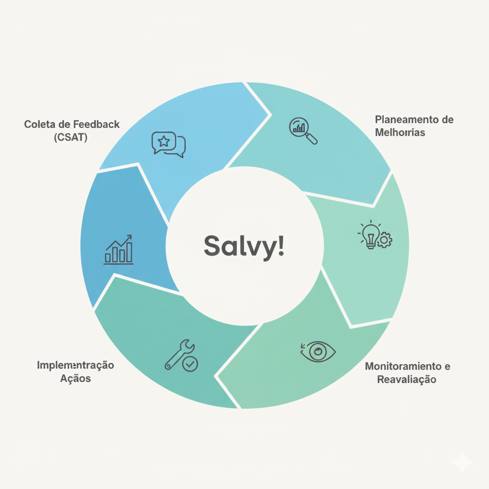

CX como Acelerador de Crescimento: Um Plano para Escalar com Qualidade
Visão e Contexto
Olá! É um prazer discutir como podemos juntos transformar o CX da Salvy. Atualmente, a empresa enfrenta um crescimento explosivo, mas com desafios operacionais claros:
- A Taxa de Contato (CR) subiu de 0,050 para 0,068, e nosso Tempo de Resolução (TTR) saltou para 67 horas.
- O salto nos indicadores sinaliza um risco de sustentabilidade: a fricção atual no processo pode desviar a atenção dos times de Engenharia e Produto, o que ameaça nosso crescimento futuro. Precisamos otimizar esses fluxos para proteger ativos essenciais.
Tese Central: O desafio não é o volume de clientes, mas sim a otimização do processo e a aplicação de Inteligência e Automação Estratégica. Vamos transformar o CX em um centro de inteligência e deflexão.
Diagnóstico: Os 3 Sinais de Alerta Operacional
1. Crise de Escalabilidade: O Alto Custo do Contato
- Nossa operação está gerando 0,068 tickets para cada linha (1.100 tickets / 16.000 linhas).
- Se o custo de atendimento por cliente continuar alto, o crescimento da base de linhas será economicamente insustentável.
2. Crise de Qualidade: CSAT e TTR Em Desalinho
- O TTR saltou de 17h para 67h, e o CSAT despencou de 99% para 87%. Isso é um sinal de alarme.
- A causa provável é o aumento expressivo dos Tickets N3 (escalados, de 15 em Janeiro para 55 em Março), o que gera gargalo e atrasa drasticamente as resoluções.
3. Personalização CX: A Oportunidade da Triagem por Jornada
- Podemos aprimorar a experiência de ponta a ponta. A solução é Segmentar o CX por Perfil: criando uma jornada distinta para o Gestor (focada em resolução e rapidez) e para o Usuário/Funcionário (focada em autoatendimento e deflexão).
Perguntas Chave e Painel de Resultados
O que Precisamos Saber Agora?
- Quais são os **Top 5 motivos de tickets** em todos os níveis de atendimento (N1, N2 e N3)?
- A atual ferramenta de atendimento (Atlas.so) atende aos requisitos de IA e automações (integrações via API)? Temos alguma integração via API com a Atlas hoje?
- Há processos manuais sendo realizados hoje pela operação que representam uma oportunidade imediata de automação?
- Qual canal de atendimento apresenta o maior volume de interações?
- Temos algum processo ou rotina de monitoria dos atendimentos visando garantir a qualidade e a calibração do time?
- Causa Raiz N3:Quais são os Top 5 motivos de contato que impulsionaram o salto de Tickets N3 a partir de Março? Qual problema o time de Produto pode eliminar?
Novas Métricas Essenciais (O Painel do Líder)
Para medir a saúde e a escalabilidade, sugiro focar em três indicadores chave:
| Métrica | O que Acompanha | Por que é Crítica para a Salvy |
|---|---|---|
| 1. Taxa de Contato (CR) | Tickets / Quantidade de Linhas | Métrica de Escalabilidade. Se cair, o CX está mais eficiente. |
| 2. Taxa de Deflexão (DR) | Interações resolvidas via Atendimento digital / Total de interações | Mede o sucesso dos canais digitais (reduz TTR e custo). |
| 3. Resolução no Primeiro Contato (FCR) | Tickets Resolvidos na 1ª Interação / Total de Tickets | Ataca diretamente o alto TTR e garante a satisfação imediata do cliente. |
Diagrama de Foco Estratégico
Atacando a Deflexão e a Resolução (DR + FCR) para forçar o CR e o TTR para baixo.
O Plano de Evolução: Execução em 3 Fases (Foco em IA)
1. Curto Prazo (0-3 Meses): Agentes Inteligentes (Nível 1 + IA informacional)
| Foco Estratégico | Ação Tática Detalhada | KPI de Sucesso (Target) |
|---|---|---|
| **Agentes Inteligentes (N1)** | Construção de Fluxo de Atendimento e definição dos pontos de IA no fluxo. Treinamento da IA para respostas simples baseadas nos principais artigos da Central de Ajuda. Implementação da triagem B2B (Gestor vs. Funcionário) no canal de maior volume. | Aumentar Retenção / Deflexão (DR) para > 15%. |
| Qualidade e FCR (N2/N3) | Implantação do Guia de Resolução Rápida (GRR): Focar os agentes remanescentes nos Tickets N2 e N3, garantindo o FCR alto para essas interações críticas. | TTR < 48h e CSAT > 90% |
Fluxo do Agente de IA N1 (Deflexão e Triagem)
Visualização da jornada B2B: Separação de canais e foco em autoatendimento.

Simulação da Jornada Inicial do Chatbot: Clique no botão de chat abaixo para simular a triagem de Gestor vs. Usuário/Funcionário, destacando a segmentação da jornada.
(Este botão simula a jornada inicial de triagem e deflexão, mostrando como o Agente separaria os perfis para escalonamento ou autoatendimento.)
2. Médio Prazo (4-6 Meses): Agentes de IA Nível 2 e Integrações + Excelência Operacional
| Foco Estratégico | Ação Tática Detalhada | KPI de Sucesso (Target) |
|---|---|---|
| Agente de IA N2 e Integrações | Expansão do Agente de IA para atendimentos de Média Complexidade: Incluir integrações com sistemas e CRM para automatizar processos e personalizar a experiência dos tickets de Média Complexidade. | Redução nos Tickets N2/N3. |
| Excelência Operacional e Auditoria de IA | Implementação do Ciclo de Monitorias de Qualidade: Criação de fichas de monitoria e implementação de IA para Auditoria (Monitoria dos atendimentos) e calibração. | CSAT > 95% e TTR < 48h |
| Sustentabilidade do Autoatendimento | Revisão Periódica da Central de Ajuda: Implementar um ciclo de revisão dos Top 10 artigos para garantir que a documentação esteja sempre atualizada e coerente com o produto. | Aumento na Taxa de Consumo do Help Center (views/semana). |
3. Longo Prazo (1 Ano): Inteligência Preditiva e Escala Rentável
| Foco Estratégico | Ação Tática Detalhada | KPI de Sucesso (Target) |
|---|---|---|
| Alinhamento Produto/CX | Estruturação do Feedback Loop: Criar um processo formal para transformar os Top 3 motivos de contato em sprints de eliminação da causa raiz junto aos times. | Taxa de Contato (CR) < 0,034 |
| Escala e Competência | Desenvolvimento do Time e PDI: Implementar o Plano de Desenvolvimento Individual (PDI) da equipe, garantindo a formação de novos líderes/especialistas. | Custo de Suporte por Linha (CSL) em declínio. |
O Feedback Loop com o Produto
O processo de transformar a inteligência do CX em evolução do Produto e eliminação de causa raiz.

"A minha prioridade enquanto líder de CX será garantir que a Salvy nunca cometa os mesmos erros que a motivaram a nascer."